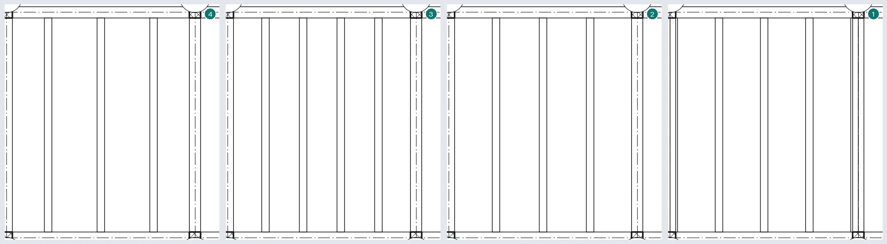
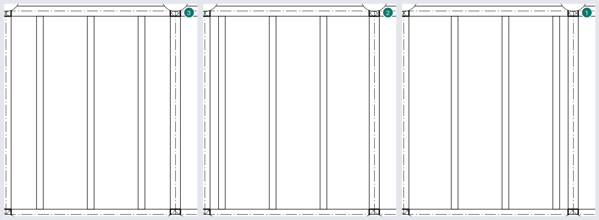
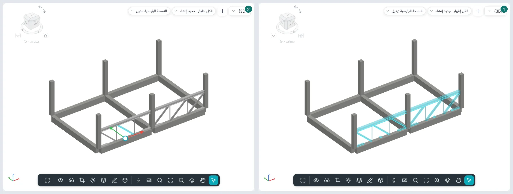
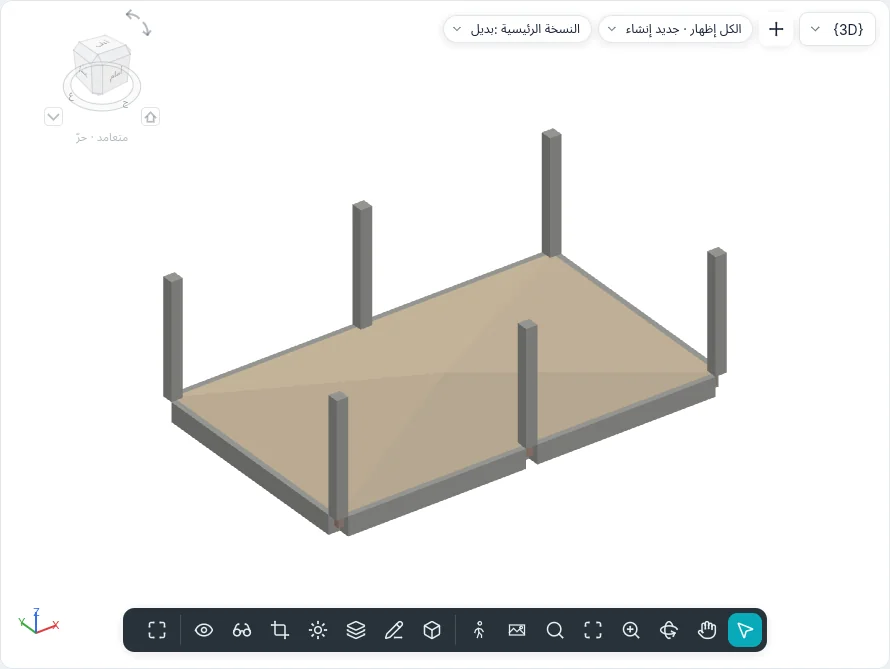
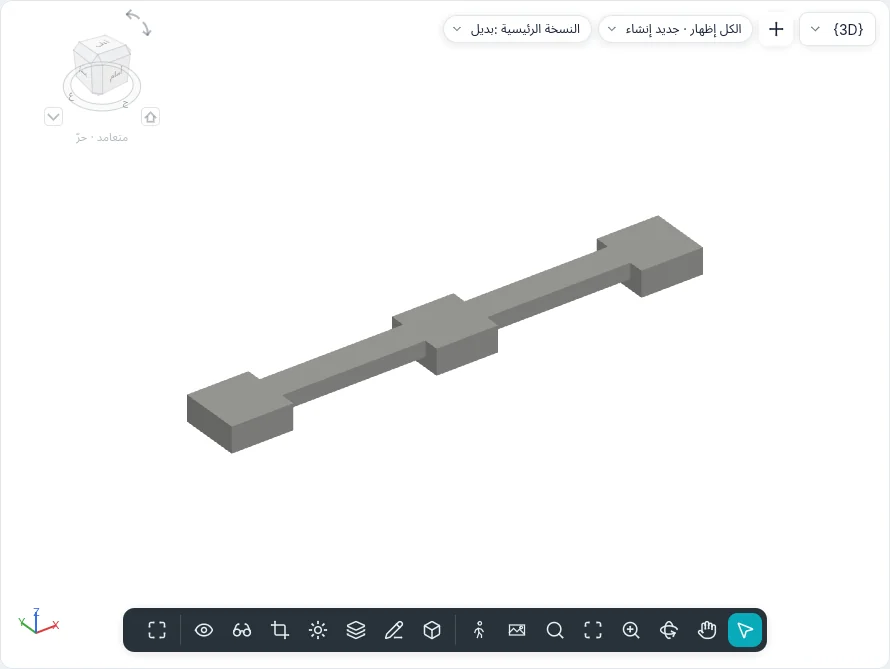
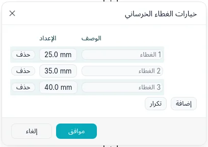
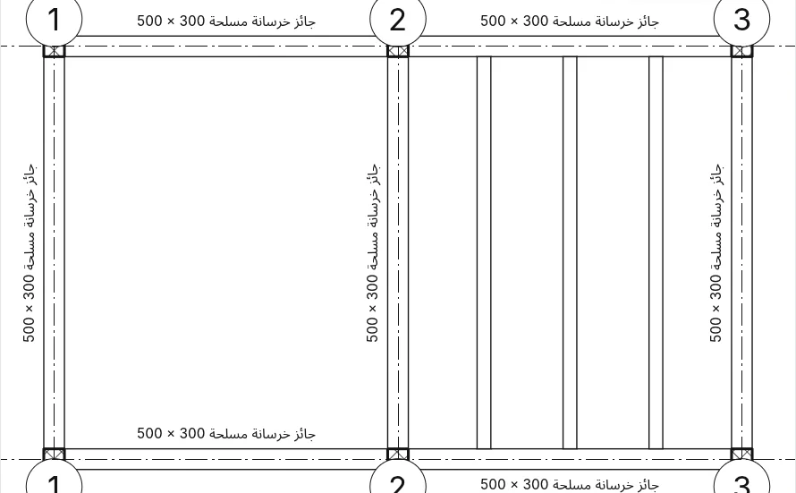

الإنشاءات والأساسات
يجمع تبويب الإنشاءات (في نمط BIMopen: إنشاء ▸ الإنشاءات) العناصر التي تحمل المبنى: الجوائز والدعامات وشبكات الجسور والجملونات والجدران والبلاطات الإنشائية والأعمدة الإنشائية والقواعد المنفصلة والأساسات الشريطية واللبشات. والجوائز والدعامات وأعضاء الجملونات فئة واحدة هي الإطار الإنشائي؛ أما القواعد المنفصلة والأساسات الشريطية واللبشات فهي الأساسات الإنشائية. وتعمل الأدوات نفسها في المساقط والمقاطع والواجهات والعروض ثلاثية الأبعاد، حيث يسمح العرض بذلك.
أنواع الإطار الإنشائي
أنواع الجوائز والدعامات مقاطع بارامترية من BIMopen، مثل مقاطع الأعمدة الإنشائية. يختار شكل المقطع الشكل: مستطيل (خرسانة أو خشب)، دائري، مقطع I (أيضًا بشفتين غير متساويتين وشفتين مائلتين)، مقطع أنبوبي مستطيل، مقطع أنبوبي دائري، زاوية، مقطع C (أيضًا بحافة) ومقطع T. وتعرض معلمات النوع أبعاد الشكل المختار فقط، وتحسب للقراءة فقط خصائص التحليل الإنشائي: المساحة، والمحيط القابل للطلاء، والوزن الاسمي (من كثافة المادة)، وعزوم القصور الذاتي، والمعاملات المرنة واللدنة، وثابتي الالتواء والتشوه، ومساحات القص، وزاوية المحاور الرئيسية. ويحفظ مفتاح اسم المقطع اسم المقطع التجاري.
يتضمن المشروع الجديد جوائز من الخرسانة المسلحة، ومقاطع IPE وHEA وHEB وUPN، والزوايا، ومقاطع T، والمقاطع الأنبوبية، وجوائز من الخشب المصفح الملصوق.
الجائز
يفتح الإنشاءات ▸ جائز البطاقة وضع جائز. نقرتان تصنعان جائزًا: يلتقط الطرفان مركز الأعمدة الإنشائية، ومحور الجدران الحاملة، وأطراف الجوائز الأخرى وخطها، وتقاطعات خطوط الشبكة، ويقول شريط الحالة ماذا التقط. ويتضمن شريط الخيارات:
| الخيار | ما يفعله |
|---|---|
| مستوى الوضع | منسوب العرض، الذي يُوضع عليه الجائز |
| الاستخدام الإنشائي | يستنتجه <تلقائي> من الركائز: بين الأعمدة أو الجدران يكون جائز رئيسي، وبين الجوائز الرئيسية رافدة، وبين الروافد مدادة؛ أو تختاره أنت |
| الالتقاط ثلاثي الأبعاد | يلتقط الطرفان العناصر الإنشائية خارج مستوى العمل: جائز مائل |
| سلسلة | نهاية جائز هي بداية الجائز التالي؛ وينهي Esc السلسلة |
| وسم عند الوضع | يُنشأ كل جائز مع وسمه |
متعدد ▸ على خطوط الشبكة: انقر خطوط الشبكة ثم النهاية (أو Enter)؛ يُنشأ على كل خط شبكة جائز لكل بحر بين الركائز التي تقطعه. ولا يتلقى الجدار القائم على خط الشبكة جوائز؛ ولا تتضاعف الجوائز الموجودة من قبل.
في المقطع أو الواجهة يُرسم الجائز في مستوى العرض، وطرفاه على العناصر الإنشائية المنقورة؛ وفي العرض ثلاثي الأبعاد على المنسوب الواقع تحت المؤشر، أو على العنصر مع الالتقاط ثلاثي الأبعاد.
خصائص الجائز
| المجموعة | الخصائص |
|---|---|
| القيود | المنسوب المرجعي، مستوى العمل، إزاحة منسوب البداية وإزاحة منسوب النهاية (جائز مائل)، الاتجاه (عادية، أفقي)، الدوران المستعرض |
| الموضع الهندسي | امتداد البداية/امتداد النهاية (الأطراف الحرة)، تراجع وصلة البداية/تراجع وصلة النهاية (الأطراف الموصولة، فولاذ وخشب)، الضبط YZ (منتظم أو مستقل)، الضبط Y/الضبط Z مع قيمة الإزاحة لكل منهما، وأيضًا للبداية والنهاية |
| المواد والتشطيبات | المادة الإنشائية |
| إنشائي | الاستخدام الإنشائي، موضع الرمز الخطي، نوع ربط البداية/النهاية، مسافة ربط البداية/النهاية والعمود المرجعي (العلوي أو السفلي) لكل طرف، وصلة البداية/وصلة النهاية (إطار مقاوم للعزم، عزم ظفري)، مقدار التقوس العكسي، عدد القوائم الرأسية، ارتكاز الجائز عند البداية/عند النهاية على جدار إنشائي، الوزن الأقصى، الوزن الدقيق، المساحة المطلية |
| الأبعاد | طول النظام، طول القطع، الحجم، المنسوب في الأعلى والمنسوب في الأسفل («متغير» في الجائز المائل) |
| التحليل الإنشائي | تحرير البداية/تحرير النهاية (مثبت، مفصلي، عزم الانحناء، معرّف من المستخدم بالقيود الستة)، التحليل كـ |
للجائز المحدد عكس الطرفين، ولكل طرف منع الوصلة.
كيف يُرسم
- منخفض: خط، بنمط خط استخدامه (الأنماط حسب الفئة ▸ الإطار الإنشائي ▸ جائز رئيسي، رافدة، مدادة…)، مفصول عن الأعمدة والجوائز التي يصلها بمقدار مسافة رمز القطع. وفي المقطع والواجهة تكون الجوائز خطوطًا أيضًا، مع رموز العزم.
- متوسط وعالٍ: محيط المقطع. وفي مسقط التخصص فيه «إنشائي» تُرسم الجوائز التي تغطيها بلاطة بخط متقطع؛ وفي مسقط «معماري» لا تظهر.
- في المقطع يُقطع الجائز بنقشة مادته.
الوصلات
يتوقف الجائز عند وجه العمود والجدار الحامل اللذين يرتكز عليهما (ولا يتوقف أبدًا عند جدار غير حامل)؛ والوصلة بين الجوائز إما على شكل T (يبقى الجائز المار كاملًا) أو ركنية بين جائزين من النوع نفسه في المستوى نفسه. وتصبح الخرسانة كتلة واحدة: يتغلب العمود على الجائز، وتحافظ البلاطات والجدران على شكلها، ويتوقف الجائز الواقع تحت بلاطة خرسانية عند وجهها السفلي.
يعرض الإنشاءات ▸ الإطار ▸ وصلات الجائز/العمود سهمًا عند كل طرف موصول: باتجاه الوصلة يكون ذلك الجائز مقطوعًا؛ ونقرة واحدة تعكسه. ويصفّي شريط الخيارات حسب المادة (فولاذ، خشب، خرسانة مسبقة الصب، أخرى).
الدعامة
الإنشاءات ▸ دعامة:
- في واجهة الإطار (أو في مقطع)، نقرتان على عناصر إنشائية، مثل قاعدة عمود وجائز؛
- في المسقط، مع منسوب البداية وإزاحة ومنسوب النهاية وإزاحة في شريط الخيارات؛
- في العرض ثلاثي الأبعاد، على نقاط العناصر المنقورة.
يبقى الطرف الموضوع على جائز مرتبطًا بـالنسبة (من 0 إلى 1) أو بـالمسافة على امتداده، من بدايته أو من نهايته: فإذا تحرك الجائز أو طال، تبعته الدعامة. الاستخدام الإنشائي: تدعيم رأسي، دعامة ركنية، عضو جذعي، أخرى.
الرموز في المسقط والإعدادات الإنشائية
يضبط الإنشاءات ▸ الإطار ▸ الإعدادات الإنشائية، على الورق:
- مسافة رمز القطع للدعامات، وللجوائز والجملونات، وللأعمدة؛
- رموز الدعامات: خط موازٍ (مع إزاحته) أو خط بزاوية، وإظهار الدعامة العلوية وإظهار الدعامة السفلية (بخط متقطع أيضًا)، ورمز الدعامة الركنية؛
- رموز الوصلات للجوائز والدعامات.
تظهر الرموز في مستوى التفاصيل منخفض.
شبكة الجسور
يملأ الإنشاءات ▸ شبكة جسور بحرًا بجوائز متوازية:
- شبكة جسور تلقائية: نقرة واحدة في بحر تحيط به جوائز أو جدران حاملة؛
- رسم شبكة جسور: الحدود في وضع الرسم (إنشاء حدود شبكة الجسور) مع اختيار الركائز (تبقى الحدود مرتبطة بالجوائز والجدران المنقورة، ويحدد أولها الاتجاه)، وخط ومستطيل واختيار الخطوط واتجاه الجائز. والحلقة الداخلية فتحة.
قاعدة التوزيع: مسافة ثابتة، عدد ثابت، أقصى تباعد، التباعد الصافي؛ ومع الأولى والأخيرة الضبط (البداية، النهاية، الوسط، خط الاتجاه). وتكمل نوع الجائز والمنسوب ووسم عند الوضع (وسم واحد لشبكة الجسور أو وسم لكل جائز) الخيارات.
تتبع الجوائز الركائز عند تحريكها. ولشبكة الجسور المحددة إعادة تعيين النظام (تعود الجوائز المعدّلة إلى الشبكة) وإزالة شبكة الجسور (تختفي الشبكة وتبقى الجوائز).
تباعد قواعد التوزيع الجوائز كما تباعد مصفوفة نسخها: عدد ثابت مثل الأخير، ومسافة ثابتة مثل 2° بدءًا من الضبط؛ ومع التباعد الصافي تُقاس المسافة بين الأوجه، والجائز من نوع أكبر يبعد جيرانه. ويجعل ثلاثي الأبعاد في شريط الخيارات النظام غير مستوٍ: ترتفع أطراف الجوائز إلى الركائز التي تحدد الميل (الجوائز دائمًا، والجدران مع يحدد الميل أو جدران بميل محدد). ويعيد تحرير الحدود فتح الرسم؛ ويُرسم اتجاه الجائز أو يُختار بـاختيار الخطوط. ويبقى الجائز المحذوف يدويًا محذوفًا حتى إعادة تعيين النظام. وخارج فتحة مغلقة يفتح شبكة جسور تلقائية رسم الحدود.


يرتبط نظام الكمرات المنسوخ أو المعكوس أو الملصق بالكمرات والجدران الحاملة التي تقع عليها حوافه في الموضع الجديد؛ وإذا لم تجد حافة ركيزة يحذّر الأمر، ويعيد تحرير الحدود ▸ اختيار الركائز ربطها. انسخه فقط بين بحور لها الشكل نفسه والركائز نفسها.
تُغلق الكمرات المنحنية والجدران الحاملة المنحنية البحرَ أيضًا لنظام الكمرات التلقائي، لكن اتجاه الكمرات يأتي دائمًا من ركيزة مستقيمة. ويُنشأ نظام الكمرات المرسوم على أكثر من بحر مع تحذير: فالكمرات والجدران التي تعبره لا تقسمه، لذا الأفضل نظام لكل بحر.
الجملون
الإنشاءات ▸ جملون: نقرتان في المسقط تمدّان مخطط النوع (Pratt، Howe، Warren، Warren مع قوائم، Fink) على البحر. الأوتار جوائز، والأعضاء الجذعية دعامات، كلٌّ من نوع مجموعته (الأوتار العلوية، الأعضاء الرأسية، الأعضاء القطرية، الأوتار السفلية). وتشمل الخصائص ارتفاع الجملون والوتر الحامل وأقصى عرض للوح وعدد الألواح والدوران.
للجملون المحدد ربط الأعلى/الأسفل (يتبع الوتر وجه سقف أو بلاطة إنشائية؛ ومع Shift الوتر السفلي)، وفك ربط الأعلى/الأسفل، وإعادة تعيين الجملون، وإزالة الجملون (تبقى الأعضاء جوائز ودعامات).
يفتح تحرير المقطع الجانبي مقطعًا أو واجهة موازية للجملون (وإن لم يكن العرض المفتوح كذلك يسأل الانتقال إلى العرض عن أيها) مع خطوط الأوتار في وضع الرسم: الخطوط فوق المنتصف هي الوتر العلوي والباقية الوتر السفلي، وتتبعها أعضاء الشبكة. ويعيد إعادة تعيين المقطع الجانبي الأوتار إلى خط المخطط. وفي عرض ثلاثي الأبعاد تُرسم الخطوط مباشرة على مستوى الجملون دون تغيير العرض.
مع اختيار الخطوط يوضع الجملون على طول جائز أو جدار أو شبكة. وتحدد نقرة على عضو الجملون كله؛ وينتقل Tab إلى العضو وحده. ويتبع الوتر المرتبط وجه المضيف على طول البحر كله؛ وإذا ارتبط الوتر الحامل حافظ الآخر على ارتفاع الجملون منه، ويبقى المقطع المرسوم ويعود مع فك ربط الأعلى/الأسفل. وتغيّر الضبط الرأسي الحامل وإزاحة غير حاملة واتجاه الجذع (متعامد: القوائم متعامدة مع الوتر الحامل) وزاوية الدوران (يدور مستوى الجملون حول خط الموضع) الأعضاء. ويبقى العضو المحذوف يدويًا محذوفًا حتى إعادة تعيين الجملون؛ وتُقطع الأعضاء فقط في الإعدادات الإنشائية. وستأتي المخططات الجديدة المرسومة في مكوّن خاص بها مع محرر المكوّنات.

مع تظهر رموز القطع على الأعضاء الجذعية في نوع الجملون، تتوقف الأعضاء الداخلية عند مستوى التفصيل المنخفض قبل الأوتار بمسافة مسافة رمز القطع للدعامات من الإعدادات الإنشائية.
الجدار الإنشائي والبلاطة الإنشائية
جدار إنشائي هو أداة الجدار بالأنواع نفسها وشريط الخيارات نفسه: يُنشأ الجدار حامل. ولكل جدار إنشائي والاستخدام الإنشائي (غير حامل، حامل، جدار قص، إنشائي مركّب).
بلاطة إنشائية هي الأرضية مع تحديد إنشائي. وفي الرسم يرسم اتجاه البحر اتجاه بحرها؛ وفي النهاية يُنشأ رمز اتجاه البحر في مركز البلاطة. ويعيد التعليقات التوضيحية ▸ اتجاه البحر وضعه (مع الوضع التلقائي في المركز)؛ وعند تحديده يمكن تدويره، ومحاذاة عمودية تجعله عموديًا على حافة أو جائز أو خط شبكة.
تحرير الشكل
للأرضية المحددة (الإنشائية أو البلاطة الأساسية أو أي أرضية) لوحة تحرير الشكل:
- تعديل العناصر الفرعية: انقر زاوية أو نقطة ثم اكتب منسوبها في شريط الخيارات؛ ويزيل Del النقطة.
- إضافة نقطة: نقطة داخل الأرضية عند المنسوب المحدد؛ ومع نسبي يُضاف إلى ارتفاع السطح في ذلك الموضع.
- إضافة خط تقسيم: نقرتان؛ ينثني السطح على طول الخط.
- اختيار الركائز: انقر جائزًا تحت الأرضية؛ ينشأ خط تقسيم على طول الجائز عند وجهه العلوي.
- إعادة تعيين الشكل: يزيل النقاط والخطوط فتعود الأرضية مستوية (أو تحتفظ بميلها).
يصبح الوجه العلوي سطحًا مثلثيًا يمر بهذه النقاط، وتتبعه البلاطة كلها محافظةً على سمكها. ويُظهر منسوب الجزء العلوي ومنسوب القاعدة عندئذ متغير.

الأساسات
| الأداة | طريقة العمل |
|---|---|
| قاعدة منفصلة | نقرة في المسقط أو في العرض ثلاثي الأبعاد (مفتاح المسافة: تدوير)، أو على خطوط الشبكة أو تحت الأعمدة ثم النهاية. يقع الوجه العلوي على المنسوب مضافًا إليه إزاحة الارتفاع عن المستوى؛ ويرتكز العمود الذي فوقها عليها. ويربطها التحرك مع خطوط الشبكة بخطوط الشبكة |
| أساس شريطي | نقرة على جدار إنشائي: يمتد الأساس تحت قاعدته ويتبعه. حامل: العرض واللامركزية؛ استنادي: عرض الجانب الخارجي وعرض الجانب الداخلي. وينقطع تحت الأبواب والنوافذ التي تلامس القاعدة، إلا مع عدم القطع عند الإدراجات؛ ويبرز عند الأطراف الحرة بمقدار الطول الافتراضي لامتداد النهاية |
| لبشة | الحدود في وضع الرسم (إنشاء حدود اللبشة)، مثل الأرضية: تقع تحت منسوبها، منخفضة بسماكة طبقاتها. الاستخدام الإنشائي: أساس أو بلاطة أساس |
عند تحديد أساس شريطي، تُطيل الدوائر المصمتة عند طرفيه الأساسَ أو تقصّره على امتداد الجدار، مع الالتقاط إلى المراجع القريبة؛ وتفعل الدوائر عند طرفي الكمرة أو الدعامة الشيء نفسه. وفي كمرات الفولاذ والخرسانة سابقة الصب والخشب تغيّر الأسهم الواقعة بعد الطرفين امتداد البداية/النهاية عند طرف حر وتراجع وصلة البداية/النهاية عند طرف موصول. والقواعد المنفصلة والأساسات الشريطية الخرسانية المتلامسة تشكل كتلة واحدة: تحتفظ القاعدة بشكلها وتقطع الأساس الشريطي (ومن قاعدتين تقطع الأسبق الأخرى)، ولا يُرسم خط بينهما في المسقط.


الغطاء الخرساني للتسليح
يسرد الخرسانة المسلحة ▸ خيارات الغطاء الخرساني أغطية المشروع، لكل منها اسم ومسافة: إضافة وتكرار وحذف. وتأخذ العناصر التي كانت تستخدم غطاءً محذوفًا الغطاء الأول. وتختار الجدران الإنشائية والأعمدة والجوائز والدعامات الخرسانية والأرضيات الإنشائية والبلاطات الأساسية والأساسات المنفصلة والشريطية غطاءها في الخصائص: غطاء حديد التسليح - السطح العلوي وغطاء حديد التسليح - السطح السفلي وغطاء حديد التسليح - الأسطح الأخرى (وفي الجدران الغطاء - الوجه الخارجي والغطاء - الوجه الداخلي وغطاء حديد التسليح - الأسطح الأخرى).

العروض والتسميات والجداول وIFC
- التخصص في العرض: معماري أو إنشائي. ويخفي الثاني الجدران غير الحاملة ويرسم بخط متقطع ما تغطيه البلاطات.
- التعليقات التوضيحية ▸ تسميات الكمرات: تسميات الإطار والمناسيب على جميع جوائز المسقط (أو على المحددة منها) في ستة مواضع، فوق وتحت، عند البداية والوسط والنهاية؛ ويختار عرض المنسوب الأعلى أو الأسفل أو كليهما أو الفعلي.
- تُقرأ تسمية الكمرة على امتداد الكمرة وتوضع بجانبها، في الجهة التي لا تغطي فيها كمرة أخرى (في الأعلى إذا كانت الجهتان خاليتين)؛ وتُسحب مثل أي تسمية. في تسميات الكمرات ▸ الإعدادات تُقرّب الإزاحة الأفقية عند الطرفين موضعي البداية والنهاية نحو المنتصف، وتُبعد الإزاحة الرأسية التعليقات عن جانب الكمرة.
- يتضمن جدول/كميات الفئات الإطار الإنشائي وشبكات الجسور والجملونات والأساسات الإنشائية، مع جميع المعلمات حقولًا.
- في IFC تُصدَّر الجوائز الرئيسية والروافد والمدادات بوصفها
IfcBeam، والدعامات والأعضاء بوصفهاIfcMember، والجملونات بوصفهاIfcElementAssembly، والقواعد المنفصلة والأساسات الشريطية بوصفهاIfcFooting، واللبشة بوصفهاIfcSlabقاعدية؛ وتحمل الجدران والبلاطات الإنشائيةLoadBearing.

من سطر الأوامر
| الأمر | ما يفعله |
|---|---|
beam |
جوائز من نقطتين، في سلسلة، أو على شكل قوس، أو على خطوط الشبكة |
brace |
دعامة بين نقطتين |
beamsystem, beamsystemedit |
شبكة جسور تلقائية أو من حدود؛ إعادة تعيينها أو إزالتها |
truss, trussedit |
جملون؛ ربطه أو فك ربطه أو إعادة تعيينه أو إزالته |
pad, strip |
قواعد منفصلة (في نقطة، على خطوط الشبكة، تحت الأعمدة)، أساسات شريطية |
spansymbol, spanalign |
رمز اتجاه البحر؛ محاذاته |
beamjoin, structuralsettings, beamannotations |
الوصلات، الإعدادات الإنشائية، تسميات الكمرات |
floorshape |
تحرير شكل الأرضية: النقاط وخطوط التقسيم والركائز وإعادة التعيين |
covers |
إعدادات الغطاء الخرساني |